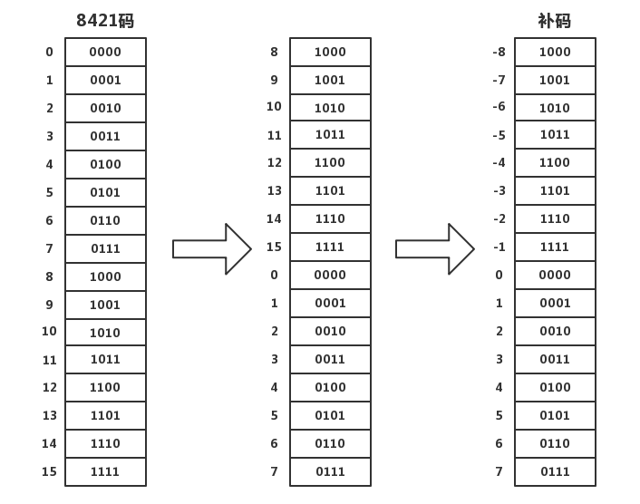

在计算机系统中使用的数据都是最终以二进制的形式来表示的（可以看看这篇文章：信息中的 0 和 1 ），我们日常生活中主要使用十进制，为了方便书写二进制数，编程中还会用到十六进制，Java内部采用二进制补码运算，自动发送上溢出（乘法）和下溢出（除法），Java内部没有十进制，但是编程输出时可以按照人类的十进制习惯输出，补码负数的最高位是1，也就是符号位。
这是一个有趣的演化过程，假如计算机中使用4位的二进制数表示数据，最多能表示0到15（十进制），把这叫做8421码，后来有一位牛人做了一个细微的改动，把所有以1开头的二进制数（大于7的数）放在0的前面，并且用来表示负数-1到-8,这就是4位补码，如下图。

这一看，并不能看出有什么优化，可到计算的时候，你就会发现它的神奇厉害的地方了。
1. 加法
普通正数的加法没有什么问题，看看正数和负数相加的情况，比如：
-1(1111) + 1(0001) = 0(10000)
如果溢出最高位1，保留后4个0，因为是4位二进制的运算，那么得到 -1+1 = 0，和我们生活中情况一致，同理：
-8(1000) + 7(0111) = -1(1111)
结论：在四位二进制数运算中，超出就丢弃，这种设计是非常合理的。
2. 乘法
同样普通正数的乘法不用说，看看负数相乘的情况，比如：
(-1)(1111)*(-1)(1111) = 1(0001)
本来结果为11100001，但溢出丢弃，所以取0001，结果一样，这种运算就是补码运算。
计算机中正数和负数的关系也就是补码的关系，换算方法是取反加一，比如：
public class Complement {
public static void main(String[] args) {
int a = 3;
int b = ~3+1; //取反加一
System.out.println(a); //输出：3
System.out.println(b); //输出：-3
}
}
补码运算也不能超出范围，超出了范围就会有溢出危险，比如：
8位二进制补码最多能表示$2^8$（256）个数，范围是 -128~127。